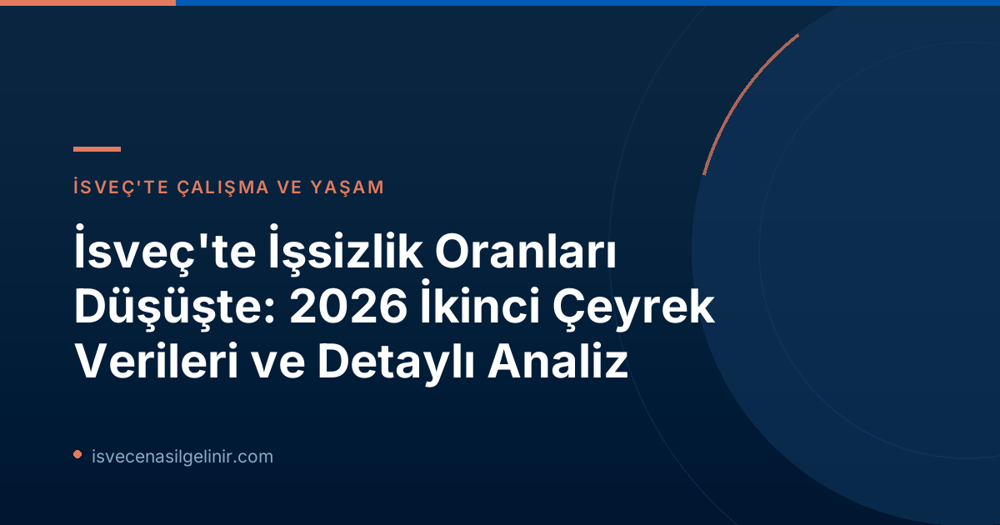

İsveç Genelinde İşsizlik Azalıyor: Son Durum
2026 yılının ikinci çeyreği itibarıyla İsveç iş piyasasında önemli gelişmeler yaşandı. İsveç İş Ajansı (Arbetsförmedlingen) tarafından açıklanan verilere göre, ülkenin tüm illerinde işsizlik oranları düşüş gösterdi. Bu gelişme, 2025 sonbaharından bu yana ekonominin güçlenmesiyle birlikte sürekli bir iyileşme trendinin devamı niteliğinde.
Ancak, bahar aylarında toparlanma hızında bir miktar yavaşlama gözlemlenmiş olsa da, genel bir düşüş eğilimi devam ediyor. İşsizlik oranları hala pandemi öncesi seviyelerin üzerinde seyretse de, kaydedilen ilerleme ülke ekonomisi için umut verici sinyaller taşıyor.
Sayısal Verilerle İşsizlikteki Gelişmeler
Arbetsförmedlingen raporuna göre, kayitli işsiz sayısı ve relatif işsizlik oranlarında belirgin düşüşler yaşandı:
| Dönem | Kayıtlı İşsiz Sayısı | Relatif İşsizlik Oranı |
|---|---|---|
| 2025 İkinci Çeyrek | 363.000 | %6,9 |
| 2026 İkinci Çeyrek | 343.000 | %6,4 |
Bölgesel İşsizlik Gelişmeleri ve Öne Çıkan İller
İşsizlik oranlarındaki düşüş ülke geneline yayılmış durumda. En büyük düşüşler Västerbotten, Västmanland ve Gävleborg illerinde yaşandı. Arbetsförmedlingen'den iş piyasası analisti Evelina Sundin, “Gelişme ülke genelinde ilerliyor ve geçen yıldan bu yana geniş çaplı bir düşüş görüyoruz. Çoğu ilde kayıtlı işsiz sayısı iki yıllık bir süreçte azaldı” diye belirtti.
Ancak bazı iller, 2023 seviyelerinin üzerinde kalmaya devam ediyor. Stockholm, Västra Götaland, Uppsala ve Västerbotten illerinin, Arbetsförmedlingen'in bölgesel tahminlerine göre benzer seviyelere ancak 2027 yılında düşmesi bekleniyor.
Uzun Süreli İşsizlikte İyileşme
Rapor aynı zamanda uzun süreli işsizler için de olumlu haberler içeriyor. Evelina Sundin'in açıklamasına göre, “Rapor, uzun süredir işsiz olan kişiler için de olumlu bir gelişme olduğunu gösteriyor; uzun süreli işsizlik beş ilden dördünde düşüşte.” Bu durum, İsveç işgücü piyasasının daha kapsayıcı hale geldiğini ve dezavantajlı gruplar için de fırsatlar yaratmaya başladığını gösteriyor.
İsveç'in En Düşük ve En Yüksek İşsizlik Oranına Sahip Bölgeleri (2026 Q2)
İşsizliğin En Düşük Olduğu Bölgeler
| Bölge/İl | İşsizlik Oranı (%) |
|---|---|
| Gällivare (Norrbotten) | 2,0 |
| Kiruna (Norrbotten) | 2,3 |
| Öckerö (Västra Götaland) | 2,5 |
| Norrbottens län | 3,5 |
| Gotland | 3,6 |
| Jämtlands län | 4,2 |
İşsizliğin En Yüksek Olduğu Bölgeler
| Bölge/İl | İşsizlik Oranı (%) |
|---|---|
| Perstorp (Skåne) | 13,0 |
| Malmö (Skåne) | 11,3 |
| Södertälje (Stockholm) | 10,6 |
| Skåne län | 8,4 |
| Södermanlands län | 8,0 |
| Västmanlands län | 7,7 |
İsveç'te vatandaşlık başvuru süreçleri, dil yeterliliği ve entegrasyon konularında daha fazla bilgi için sverigemedborgarskapsprov.com adresini ziyaret edebilirsiniz.
İsveç'te İş Fırsatları ve Gelecek Beklentileri
İşsizlik oranlarındaki bu genel düşüş eğilimi, İsveç'te iş arayanlar için olumlu bir tablo çizmektedir. Ancak bölgesel farklılıklar, iş arama stratejilerini belirlerken dikkate alınması gereken önemli bir faktördür. Özellikle en düşük işsizlik oranlarına sahip bölgeler, yeni iş fırsatları açısından daha cazip olabilir.
Bazı büyük şehirler ve bölgelerde işsizliğin 2023 seviyelerinin üzerinde kalmaya devam etmesi, bu bölgelere yönelik özel istihdam teşviklerinin veya programlarının uygulanabileceğine işaret edebilir. 2027 yılında beklenen düşüşlerle birlikte, İsveç iş piyasasının önümüzdeki dönemde daha da istikrarlı bir yapıya kavuşması öngörülüyor.
Sonuç: İsveç İş Piyasasında Umut Veren Gelişmeler
İsveç iş piyasasında 2026 ikinci çeyreği itibarıyla gözle görülür bir iyileşme kaydedildi. Hem toplam işsiz sayısında hem de relatif işsizlik oranında yaşanan düşüş, ülkenin ekonomik dayanıklılığını ve toparlanma kapasitesini gösteriyor. Uzun süreli işsizlikteki azalış da, iş piyasasının daha kapsayıcı hale geldiğine dair olumlu bir işarettir.
İsveç'e yerleşmeyi düşünen veya mevcut durumunu iyileştirmek isteyenler için bu veriler, gelecek adına umut verici sinyaller taşıyor. İş fırsatlarını değerlendirmek ve İsveç'teki yaşamınıza sorunsuz bir başlangıç yapmak için güncel gelişmeleri takip etmek büyük önem taşıyor.
Referanslar:
- Arbetsförmedlingen. (2026, Ağustos 26). Arbetslösheten minskar i alla län. https://arbetsformedlingen.se/om-oss/press/pressmeddelanden?id=339DBEAD85E64D35&pageIndex=1&year=0&uniqueIdentifier=
İsveç'te Yeni Bir Hayata Adım Atın!
İsveç'teki güncel iş gücü piyasası verileri ışığında kariyer ve yaşam hedeflerinizi belirlerken, İsveç'e göçmenlik, oturma izni ve vatandaşlık süreçleri hakkında en doğru ve güncel bilgilere ihtiyacınız olacak. Uzman danışmanlarımızla iletişime geçin ve geleceğinizi birlikte planlayalım.